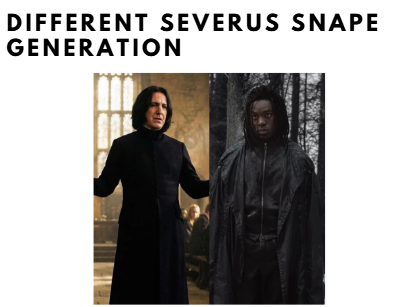
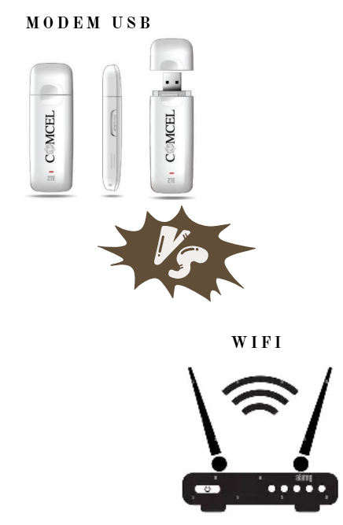
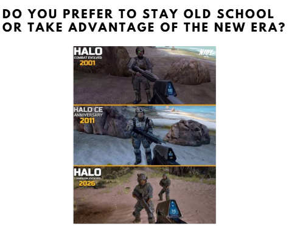
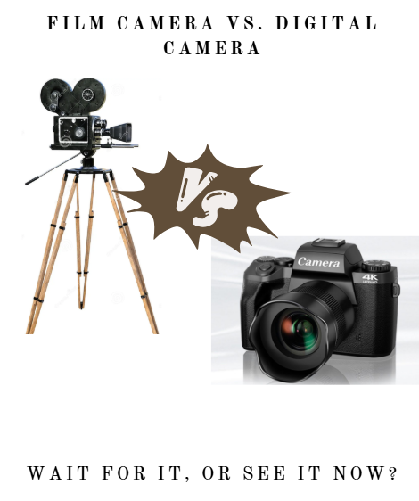
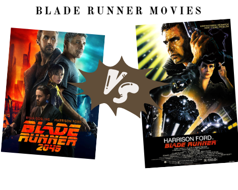
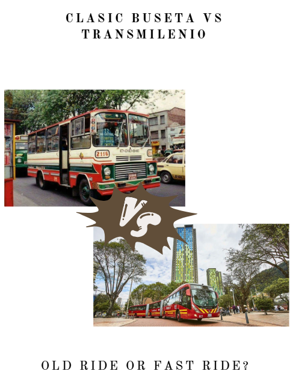
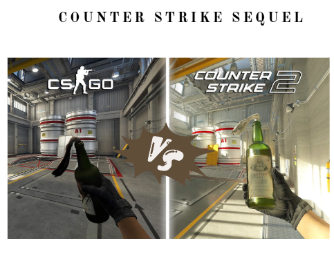

Infographic
![Newspaper-style black-and-white infographic dated September 23, 2026, titled 'Public payphones'. Section 'What it used to be': It was a coin operated machine located in public spaces, which assited many people along the second half of 20th century. Normally, it was protected by a booth (a little structure that covered the phone); they were meant to protect the user from the rain. Section 'How was it?': People used to make a line in order to use it. You would step into the booth. You would pick up the phone. You would insert the corresponding coin into the device. You would dial the number using the rotary dial. The call would be connected through an specific telephone network. Beside it: In Bogotá, first public payphones were installed in 1956 and they used to run on approximately 2 to 5 centavo coins. Section 'Payphone passing away': In the 1990s, public payphones were the most popular choice throughout the world. For instance, when you were walking outside and you need to make a call, the payphone was there to save the day! However, the mobile phone technology quickly evolved making them more affordable and portable than public payphones. As a result, payphones started to dicrease their units because of high maintenance cost. Furthermore, people were always vandalizing them. To top it off, in the past 25 years we have been witnesses of their fall. The photos show a person with their head inside a payphone hood on a pole, a payphone hood on a white wall with three people below it, and a wreath of flowers beside a payphone.](../assets/img/articles/w04-payphones-infographic.png)
Old vs. New
Press an option to cast your vote. Press another to change it, or press yours again to take it back. Every reader’s votes are added up, live.
0 votes cast
Snape
0 votes
Modem vs WiFi
0 votes
Halo
0 votes
Early returns
| Matchup | Leading | Share |
|---|
Cameras
0 votes
Blade Runner
0 votes
Buses
0 votes
Counter-Strike
0 votes